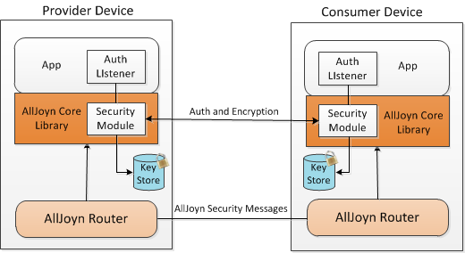
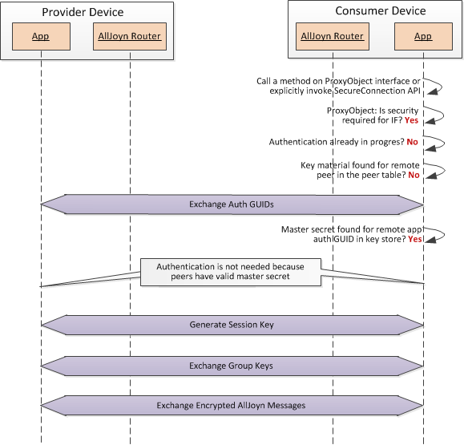
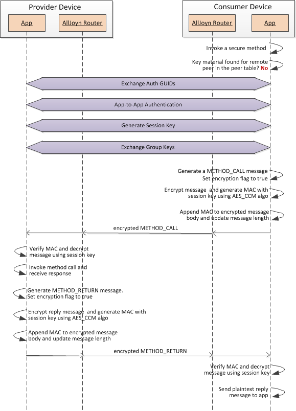
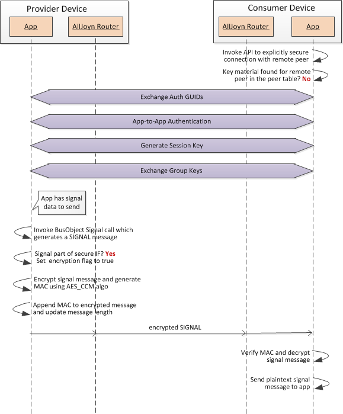
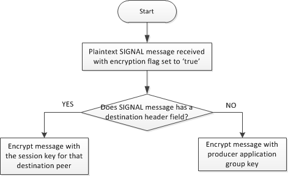

AllJoyn™ Security
Overview
The AllJoyn system provides a security framework for applications to authenticate each other and send encrypted data between them. The AllJoyn framework provides end-to-end application level security. Authentication and data encryption are done at the application. These applications can reside on the same device or on different devices, and can be attached to the same AllJoyn router or different AllJoyn routers.
NOTE: No authentication is done at the AllJoyn router layer.
The AllJoyn framework supports security at the interface level. An application can tag an interface as 'secure' to enable authentication and encryption. All of the methods, signals, and properties of a secure interface are considered secure. Authentication- and encryption-related key exchange are initiated on demand when a consumer application invokes a method call on a secure interface, or explicitly invokes an API to secure the connection with a remote peer application.
The following figure shows the high-level AllJoyn security architecture.

Figure: AllJoyn security architecture
Authentication and encryption is done at the application layer. The AllJoyn core library implements all of the logic for authentication and encryption except the Auth Listener. The Auth Listener is a callback function implemented by the application to provide auth credentials (e.g., PIN or password) or verify auth credentials (e.g., verify certificate chain in case of ALLJOYN_ECDHE_ECDSA). Authentication and encryption keys are stored in a key store managed by the Security module.
NOTE: The AllJoyn router is only involved in transmitting security-related messages between application endpoints. It does not implement any security logic itself.
The AllJoyn framework uses the Simple Authentication and Security Layer (SASL) security framework for authentication. It makes use of D-Bus defined SASL protocol D-Bus Specification for exchanging authentication related data.
The AllJoyn framework supports the following auth mechanisms for app-to-app level authentication:
- ALLJOYN_SRP_KEYX - Secure Remote Password (SRP) key exchange
- ALLJOYN_SRP_LOGON - Secure Remote Password (SRP) logon with username and password
- ALLJOYN_ECDHE_NULL - Elliptic Curve Diffie-Hellman (ephemeral) key exchange with no authentication
- ALLJOYN_ECDHE_PSK - Elliptic Curve Diffie-Hellman (ephemeral) key exchange authenticated with a pre-shared key (PSK)
- ALLJOYN_ECDHE_ECDSA - Elliptic Curve Diffie-Hellman (ephemeral) key exchange authenticated with an X.509 ECDSA certificate
The AllJoyn framework also supports ANONYMOUS and EXTERNAL auth mechanisms as defined by the D-Bus specification.
- The ANONYMOUS auth mechanism is used between two AllJoyn routers for null authentication. It is also used for authentication between a thin app and an AllJoyn router.
- The EXTERNAL auth mechanism is used between an application and the installed AllJoyn router (standalone AllJoyn router) on the Linux platform.
Security changes in the 14.06 release
In the 14.06 release, the ALLJOYN_PIN_KEYX auth mechanism is removed from the AllJoyn thin core library. This auth mechanism continues to be supported by the AllJoyn standard core library.
The following new Elliptic Curve Diffie-Hellman Ephemeral (ECDHE) based auth mechanism are added:
- ECDHE_NULL is key agreement without authentication
- ECDHE_PSK is a key agreement authenticated with a pre-shared symmetric key.
- ECDHE_ECDSA is a key agreement authenticated with an asymmetric key validated with an ECDSA signature.
These new auth mechanisms can be used by both thin apps and standard apps. Thin apps in the 14.06 release support only ECDHE-based auth mechanisms.
Use of SASL protocol for authentication is removed from the AllJoyn thin core library in the 14.06 release, and will continue to be supported in AllJoyn standard core library.
For more information about these changes, see the latest version of the Security HLD.
Security changes in the 15.04 release
In the 15.04 release, the ALLJOYN_PIN_KEYX and ALLJOYN_RSA_KEYX authentication mechanisms have been removed from the standard client. Support for ECDSA X.509 was added.
Security concepts
This section defines the AllJoyn security-related concepts.
Authentication (Auth) GUID
The Authentication GUID is a GUID assigned to an application for authentication purposes. This GUID is persisted in the key store and provides a long-term identity for the application. Typically, this GUID is associated with a single application. In the scenario where a group of related applications share a given key store, they also share the same auth GUID.
This GUID is used as a mapping key for storing and accessing authentication and encryption keys for the associated application.
Master secret
The master secret is a key shared between authenticated peer applications. Two peer applications generate the same master secret independently, and store it persistently in the key store.
The master secret is stored per Auth GUID for peer applications, and has an associated TTL settable by the application. As long as the master secret is valid, peer applications do not have to reauthenticate with each other to exchange encrypted data.
The master secret is 48 bytes in length as per RFC 5246.
Session key
A cryptographic key used to encrypt point-to-point data traffic between two peer applications. A separate session key is maintained for every connected peer application. A session key is valid as long as peers are connected (over any AllJoyn session). It is a session in the cryptographic sense and not related to an AllJoyn session. The same session key is used across all AllJoyn sessions between two peers.
Session keys are stored in the memory, they are not persisted. The session key is generated after a peer application has been authenticated, and it expires for a peer application when the connection is terminated with that peer. The session key is derived from the master secret, and is used to encrypt method calls, method replies, and unicast signals.
The session key is 128 bits long.
NOTE: The current implementation has a default TTL of 2 days for session keys. If applications remain connected that long, the associated session key expires and a new session key would need to be generated.
Group key
The group key is a cryptographic key used to encrypt point-to-multipoint data traffic (broadcast signals) sent out by a provider application. A single group key is maintained by an application to encrypt broadcast signals sent to every connected peer application.
A group key is generated when an application generates the very first session key for any connected peer. The group key is always generated independent of the provider or consumer role of an application. Only provider applications use the group key to send out encrypted broadcast signals. Applications exchange their group keys using an encrypted method call that involves the session key.
The group key is 128 bits long and randomly generated. The group key is directional in nature. Each application has its own group key to encrypt broadcast signals. In addition, it also maintain a separate peer group key for each of the connected peer for decrypting broadcast signals received from them.
Group keys are stored in the memory, they are not persisted. The group expires when the connection ends with peer applications. An application's own group key will expire when it no longer has any connections with any of its peers. The group key for a remote peer will expire when the application no longer has a connection with that peer.
NOTE: In future releases, group keys may be persisted to support encryption for sessionless signals.
Key store
The key store is a local storage used to persistently store authentication-related keys, and to store master secret and associated TTL. Applications can provide their own implementation of the key store or use the default key store provided by the AllJoyn system.
Multiple applications on a device can share a given key store. In this case, those applications share the same set of authentication keys. In the current implementation, content inside the key store is encrypted with a key derived from the key store path.
For every authenticated application, the key store maintains the master secret and the associated TTL per Auth GUID of that application. It also maintains the auth GUID assigned to the local applications that are using the key store.
The following table shows an example key store with master secret stored for two peer applications.
Key store example with master secret stored for two peer applications
Local Auth GUID - GUIDx
| Peer Auth GUID | Master secret | TTL |
|---|---|---|
| GUID1 | MS1 | T1 |
| GUID2 | MS2 | T2 |
End-to-end security flow
The following figure captures the high-level end-to-end message flow for AllJoyn security for the use case when two applications have not authenticated with each other before. The security message flow is initiated based on one of the following triggers:
- Consumer app invoking a secure method call on a remote service object or
- Consumer app explicitly invoking an API to secure the connection with the remote peer

Figure: End-to-end security flow (two applications have not authenticated with each other before)
It is ideal for an application to always explicitly secure the connection with the remote peer. In the case when an application is just interested in receiving secure signals, that is the only way to secure the connection with the remote peer in order to receive keys for decrypting signals.
The AllJoyn core library attached with the application implements all of the AllJoyn security logic. The AllJoyn router only acts as a pass-through for security-related messages. Each application needs to invoke EnablePeerSecurity API call with the AllJoyn core library to enable AllJoyn security. The application specifies authentication mechanism to be used, the Auth Listener for callback and the key store file as part of this API call. It also indicates whether key store can be shared. The AllJoyn core library generates the auth GUID for the application as part of first-time initialization of the key store. The auth GUID gets stored in the key store.
After establishing a session with the provider app, the consumer app initiates one of the security triggers mentioned above. The AllJoyn Core library checks to see if authentication is already in progress.
- If yes, it stops.
- If no, it continues with the security flow.
It looks for the key material for remote peer. In this case, since this is the first secure interaction with the remote app, no key material is found. This will trigger security flow with the remote peer.
The message flow consists of following four distinct steps in that order:
- Exchange Auth GUIDs: This step involves exchanging Auth GUIDs between peer applications. Once learned, the remote app auth GUID is used to see if the master secret is present for that auth GUID in the key store. In this case, no master secret is found since the two apps have not authenticated with each other.
- App-to-App authentication: This step involves two peers authenticating each other using one of the supported auth mechanisms. At the end of this step, two peers have authenticated each other and now share a common master key.
- Generate a session key: This step involves two peers generating a session key to be used for encrypting secure point-to-point messages between them. The session key is generated independently by both the peers based on the shared master key. A group key is also generated when the first session key is generated.
- Exchange group keys: This step involves two peers exchanging their own group keys with each other via an encrypted AllJoyn message. The AllJoyn message gets encrypted using the session key already established between two peers. The group key is used by the application to encrypt session multicast and broadcast signals. At the end of this step, two peer applications have group keys to decrypt secure broadcast signals received from each other.
Details for each of these steps are described in the following sections. After completing these steps, peer applications have now established encryption/decryption keys to exchange encrypted method calls and signals.
These keys are managed as part of a peer state table which includes a unique name for the remote peer, as well as a local auth GUID and group key for the current application.
The following table provides a sample peer state table with keys stored for two authenticated peer applications.
Sample peer state table for two authenticated peer applications.
Local Auth GUID - GUIDx App Group Key - GKx
| Peer Auth GUID | Unique name | Session key | Peer group key |
|---|---|---|---|
| GUID1 | :100.2 | SK1 | GK1 |
| GUID2 | :200.2 | SK2 | GK2 |
Already authenticated apps
When apps connect with each other subsequent to their first connection, they do not need to authenticate again with each other if the master secret is still valid. The following figure shows security flow for this use case.

Figure: Authenticated apps connecting again
In this case, since the apps were not connected, no key material is found for the remote peer. As a result, the consumer app performs the Exchange Auth GUIDs step with the remote peer. This retrieves the Auth GUID for the remote peer that can be used for lookup in the key store file.
Since the apps have already authenticated, a master secret is found in the key store for the auth GUID of the provider app and no app-to-app authentication needs to occur. The consumer app directly goes to the next step of generating session key and/or group key.
NOTE: If the verification step fails during session key generation, the consumer app must re-authenticate with the provider even if master secret is still valid.
Exchange of Auth GUIDs
The following figure shows the message flow for the exchange of Auth GUIDs between peer applications.

Figure: Exchange of Auth GUIDs
The message flow steps are described below.
- The consumer app generates an ExchangeGuids METHOD_CALL message and sends it to the provider app via the AllJoyn router. This message includes the Auth GUID of the consumer app and the maximum Auth version supported by the consumer app.
- The provider app proposes its max auth version if it does not support the auth version received from the consumer app.
- The provider app generates an ExchangeGuids METHOD_RETURN message and sends it to the consumer app via the AllJoyn router. This message includes the Auth GUID of the provider app and the max auth version of the provider app.
- The consumer app verifies that it supports the received auth version. This completes the Exchange GUIDs step.
App-to-app authentication
AllJoyn peer applications authenticate each other using one of the auth mechanisms detailed in this section. These auth mechanisms are designed based on the security constructs in RFC 5246 and RFC 5054. Applicable RFC sections are listed when describing details for these auth mechanisms.
NOTE: For the authentication message flows captured in this section, the consumer and provider apps are also referred to as client and server respectively, to correspond with terminology used in RFC 5246 and RFC 5054.
Use of D-Bus SASL protocol
The AllJoyn framework implements the D-Bus SASL exchange protocol D-Bus Specification to exchange authentication-related data. All authentication-related exchanges are done using the AuthChallenge method call/reply defined as part of the org.alljoyn.Bus.Peer.Authentication interface implemented by the AllJoyn core library.
Auth data to be exchanged is generated as a SASL string based on the D-Bus SASL exchange protocol. Auth data inside the SASL string is sent in the hex form. The generated string is then passed as a parameter to the AuthChallenge method call or method reply.
For example, to initiate authentication for ALLJOYN_SRP_KEYX, generated string would be:
"AUTH ALLJOYN_SRP_KEYX <c_rand in hex>"
This includes the SASL AUTH command, auth mechanism, and auth data in hex form.
The following table captures the D-Bus SASL commands supported by the AllJoyn framework.
D-Bus SASL commands supported by the AllJoyn framework
| Command | Direction | Description |
|---|---|---|
| AUTH [mechanism] [initial-response] | Consumer->Provider | Start the authentication. |
| CANCEL | Consumer->Provider | Cancel the authentication. |
| BEGIN |
|
|
| DATA |
|
On the consumer or provider side, contains a hex-encoded block of data to be interpreted according to the auth mechanism in use. |
| OK | Consumer->Provider | The client has been authenticated. |
| REJECTED | Consumer->Provider | On the consumer side, indicates that the current authentication exchange has failed, and further exchange of DATA is inappropriate. The consumer tries another mechanism, or tries providing different responses to challenges. |
| ERROR |
|
On the consumer or provider side, either the provider or consumer did not know a command, does not accept the given command in the current context, or did not understand the arguments to the command. |
ALLJOYN_SRP_KEYX
The following figure shows the message flow for the ALLJOYN_SRP_KEYX auth mechanism. This auth mechanism is primarily designed for use cases where a one-time use password is generated by both sides.

Figure: ALLJOYN_SRP_KEYX auth mechanism
The message flow steps are described below.
- The consumer app generates a 28 bytes client random string c_rand.
- The consumer (client) app generates an AuthChallenge METHOD_CALL message and passes "AUTH ALLJOYN_SRP_KEYX <c_rand>" as parameter in that message. The consumer app sends the method call to the provider (server) app via the AllJoyn router.
- The provider app invokes the AuthListener callback registered by the application to request for a password. The AuthListener returns the password. A username of "anonymous" is used in this case.
- The provider app computes the server's public value B as per the algorithm in section 2.5.3 of RFC 5054.
- The provider app generates an AuthChallenge METHOD_RETURN message to send a server key exchange message to the client. The provider app passes "DATA <N:g:s:B>" as parameter to that message. Refer to section 2.5.3 of RFC 5054. The 's' is a 40 bytes random salt value. The provider app sends method reply to the consumer app via the AllJoyn router.
- The consumer app validates the values of N, g, s and B per section 2.5.3 of RFC 5054.
- The consumer app computes the client's public value A per section 2.5.4 of RFC 5054.
- The consumer (client) app generates an AuthChallenge METHOD_CALL message and passes "DATA <A>" as parameter in that message. The consumer app sends the method call to the provider (server) app via the AllJoyn router.
- The provider app generates a 28 bytes server random string s_rand.
- The provider app computes a premaster secret using the algorithm in section 2.6 of RFC 5054. The premaster secret is based on the client's public value (A), the server's public value (B), and password among other parameters.
- The provider app computes a master secret based on the premaster secret, c_rand, and s_rand as per the algorithm in section 8.1 of RFC 5246.
- The provider app computes a "server finish" s_verifier as
per the algorithm in section 7.4.9 of RFC 5246.
The s_verifier is generated based on master secret, hash of handshake messages, and "server finish" label. - The provider app generates an AuthChallenge METHOD_RETURN message and passes "DATA <s_rand:s_verfier>" as parameter to that message. The provider app sends the method reply to the consumer app via the AllJoyn router.
- The consumer app invokes the AuthListener callback registered by the application to request for a password. The AuthListener returns the password. A username of "anonymous" is used in this case.
- The consumer app computes a premaster secret using the algorithm in section 2.6 of RFC 5054. The premaster secret is based on the client's public value (A), the server's public value (B), and the password among other parameters.
- The consumer app computes a master secret based on the premaster secret, c_rand, and s_rand as per the algorithm in section 8.1 of RFC 5246.
- The consumer app generates the "server finish" verifier using the same algorithm as the provider app and verifies that the computed value is same as the received s_verifier.
- The consumer app computes a "client finish" c_verifier as per the algorithm in section 7.4.9 of RFC 5246. The c_verifier is generated based on the master secret, hash of handshake messages, and "client finish" label.
- The consumer app generates an AuthChallenge METHOD_CALL message to send the c_verifier to the server. The consumer app passes "DATA <c_verifier>" as parameter to the method call. The consumer app sends the method call to the provider (server) app via the AllJoyn router.
- The provider app generates the "client finish" verifier using the same algorithm as the consumer app and verifies that the computed value is same as the received c_verifier. At this point, the client and server have authenticated with each other.
- The provider app generates an AuthChallenge METHOD_RETURN message indicating that authentication is complete. The provider app passes "OK <s_GUID>" as parameter in that message, where s_GUID is the auth GUID of the provider app. The provider app sends the method reply to the consumer app via the AllJoyn router.
- The consumer app sends an AuthChallenge METHOD_CALL to t he provider app specifying "BEGIN <c_GUID>" as parameter. This indicates to the provider that the client has received the OK message, and the stream of data messages is about to begin. The c_GUID is auth GUID of the consumer app.
- The provider app sends an AuthChallenge METHOD_RETURN message, specifying "BEGIN" as parameter.
ALLJOYN_SRP_LOGON
The following figure shows the message flow for the ALLJOYN_SRP_LOGON auth mechanism. This auth mechanism is designed for client-server use cases where server maintains username and password, and the client uses this information for authentication. This mechanism is quite similar to the AllJoyn_SRP_KEYX auth mechanism with the following differences:
- The consumer app invokes the AuthListener callback up front to request the username and password from the application. The consumer app then passes the username in the first AuthChallenge message sent to the provider app.
- The provider app uses the received username to request for password from the AuthListener.

Figure: ALLJOYN_SRP_LOGON auth mechanism
ECDHE key exchanges
In the 14.06 release, new Elliptic Curve Diffie-Hellman Ephemeral (ECDHE) based auth mechanism were added. For details on ECDHE-based auth mechanisms, see the latest version of the Security HLD.
Generation of the session key
The follwing figure shows the message flow for the generation of session keys between peer applications.

Figure: Session key generation between peer applications
The message flow steps are described below.
1. The consumer app generates a 28 bytes client nonce string c_nonce.
2. The consumer app generates a GenSessionKey METHOD_CALL
message and sends it to the provider app via the AllJoyn router.
This message includes local auth GUID corresponding to the
consumer app, a remote auth GUID corresponding to the provider app, and c_nonce.
3. The provider app generates a 28 bytes server nonce string s_nonce.
4. The provider app generates a session key and a verifier
based on the master secret, c_nonce, and s_nonce using the
algorithm described in section 6.3 of RFC 5246.
The "session key" label is used to generate the key.
5. The provider app stores the session key in the peer state
table for the auth GUID associated with the consumer app.
6. The provider app generates a 128 bit group key if no group
key exists for the provider app, and stores in the peer state table.
7. The provider app generates a GenSessionKey METHOD_RETURN
message and sends it to the consumer app via the AllJoyn router.
This message includes s_nonce and verifier.
8. The consumer app generates a session key and a verifier
based on the master secret, c_nonce, and s_nonce using the
same algorithm as the provider app as per section 6.3 of RFC 5246.
The "session key" label is used for generate the key.
9. The consumer app verifies that the computed verifier is
the same as the received verifier.
10. The consumer app stores the session key in the peer state
table for the auth GUID associated with the provider app.
11. The consumer app generates a 128 bit group key if no group
key exists for the consumer app, and stores in the peer state table.
The peer apps now have a common session key that can be used to exchange encrypted messages.
Exchange of group keys
The following figure shows the message flow for the exchange of group keys between peer applications. This is achieved via the ExchangeGroupKeys method call which is the first encrypted message sent between peer applications after the session key is established.

Figure: Exchange of group keys
The message flow steps are described below.
- The consumer app generates an ExchangeGroupKeys METHOD_CALL message. This message includes the group key of the consumer app. The consumer app sets the encryption flag to true for this message.
- The consumer app encrypts the message and generates an 8 bytes MAC (Message Authentication Code) using the session key for the remote peer app. Message encryption is done using AES CCM algorithm.
- The consumer app appends the MAC to the encrypted message body and updates the message length to reflect the MAC.
- The consumer app sends the encrypted ExchangeGroupKeys METHOD_CALL message to the provider app via the AllJoyn router.
- The provider app verifies the MAC and decrypts the message using the session key stored for the consumer app.
- The provider app stores the received group key for the remote peer (consumer app) in the peer state table.
- The provider app generates an ExchangeGroupKeys METHOD_RETURN message. This message includes the group key of the provider app. The provider app sets the encryption flag to true for this message.
- The provider app encrypts the message and generates an 8 bytes MAC using the session key for the remote peer app. Message encryption is done using AES CCM algorithm.
- The provider app appends the MAC to the encrypted message body and updates the message length to reflect the MAC.
- The provider app sends the encrypted ExchangeGroupKeys METHOD_RETURN message to the provider app via the AllJoyn router.
- The consumer app verifies the MAC and decrypts the reply message using session key stored for the provider app.
- The consumer app stores the received group key for the remote peer (provider app) in the peer state table.
Now the two apps have group key for each other which can be used to decrypt broadcast signal messages received from the peer application.
Exchange of encrypted messages
Once encryption credentials are established between applications, they can exchange encrypted methods and signals. These use cases are captured below.
Encrypted method call
The following figure shows the message flow for exchange of encrypted method call/reply between the consumer and provider applications. The reply message to an encrypted method call is also sent encrypted.

Figure: Encrypted method call/reply
The message flow steps are described below.
- The consumer app generates a METHOD_CALL message for the secure method and sets the encryption flag to true for this message.
- The consumer app encrypts the message and generates an 8 bytes MAC using the session key for the destination app. Message encryption is done using AES CCM algorithm.
- The consumer app appends the MAC to the encrypted message body and updates the message length to reflect the MAC.
- The consumer app sends the encrypted METHOD_CALL message to the provider app via the AllJoyn router.
- The provider app verifies the MAC and decrypts the message using session key stored for the consumer app.
- The provider app's AllJoyn core library invokes the MethodCall handler, which invokes the method call on the service object interface and receives a reply.
- The provider app generates a METHOD_RETURN message for the reply and sets the encryption flag to true for this message.
- The provider app encrypts the message and generates an 8 bytes MAC using the session key for the consumer app. Message encryption is done using AES CCM algorithm.
- The provider app appends the MAC to the encrypted message body and updates the message length to reflect the MAC.
- The provider app sends the encrypted METHOD_RETURN message to the consumer app via the AllJoyn router.
- The consumer app verifies the MAC and decrypts the reply message using session key stored for the provider app.
- The consumer app's AllJoyn core library sends the plaintext reply message to the application.
Encrypted signal
The following figure shows the message flow for sending an encrypted session based signal from provider application to consumer applications. The signal can be sent to a destination (unicast signal) or to multiple endpoints as multicast/broadcast signals.
NOTE: Sessionless signals are not sent encrypted in current AllJoyn system. In future, implementation can be enhanced to encrypt sessionless signals as well.

Figure: Encrypted method call/reply
The message flow steps are described below.
- The consumer and provider apps have already authenticated and established encryption keys with each other.
- The provider app has some signal data to send. It invokes the BusObject Signal() call which generates a SIGNAL message.
- The provider app sets the encryption flag to true for the SIGNAL message if the signal is defined as part of a secure interface.
- The provider app encrypts the SIGNAL message and generates an 8 bytes MAC using either the group key or session key as per the logic in the following key selection logic (provider app) figure. Message encryption is done using AES CCM algorithm.
- The provider app appends the MAC to the encrypted SIGNAL message body and updates the message length to reflect the MAC.
- The provider app sends the encrypted SIGNAL message to the consumer app via the AllJoyn router.
- The consumer app verifies the MAC and decrypts the SIGNAL message using either the session key or group key as per the logic in the following key selection logic (consumer app) figure.
- The consumer app's AllJoyn core library sends the plaintext signal message to the application.
Key selection logic
On the provider application side, unicast signals get encrypted using the session key and multicast/broadcast signals get encrypted using group key. The following figure shows the key selection logic for encrypting signals.

Figure: Key selection for signal encryption (on the provider app)
On the consumer side, a reverse logic is applied for selecting key for decrypting received signals messages as shown in the following figure.

Figure: Key selection for signal decryption (on the consumer app)
org.alljoyn.Bus.Peer.Authentication interface
The org.alljoyn.Bus.Peer.Authentication interface is the AllJoyn interface between two AllJoyn core libraries that support the application layer security within AllJoyn.
The following table summarizes members from org.alljoyn.Bus.Peer.Authentication interface.
org.alljoyn.Bus.Peer.Authentication interface methods
| Method | Description |
|---|---|
| ExchangeGuids | Method for an application to exchange its auth GUID and authentication protocol version with a remote peer application. |
| AuthChallenge | Method for an application to initiate authentication and exchange authentication data with a remote peer application. |
| GenSessionKey | Method for an application to generate a session key with a remote peer application. |
| ExchangeGroupKeys | Method for an application to exchange group key with a remote peer application. |
org.alljoyn.Bus.Peer.Authentication.ExchangeGuids parameters
| Parameter name | Direction | Description |
|---|---|---|
| localGuid | in | Auth GUID for the initiator application. |
| localVersion | in | Auth version for the initiator application. |
| remoteGuid | out | Auth GUID for the remote peer application. |
| remoteVersion | out | Auth version for the remote peer application. |
org.alljoyn.Bus.Peer.Authentication.AuthChallenge parameters
| Parameter name | Direction | Description |
|---|---|---|
| challenge | in | Auth data provided by the initiator app. |
| response | out | Auth data returned by the provider app. |
org.alljoyn.Bus.Peer.Authentication.GenSessionKey parameters
| Parameter name | Direction | Description |
|---|---|---|
| localGuid | in | Auth GUID for the initiator application. |
| remoteGuid | out | Auth GUID for the remote peer application. |
| localNonce | in | Nonce generated by the initiator app. |
| remoteNonce | out | Nonce generated by the remote peer app. |
| verifier | out | Verifier generated by the remote peer app. |
org.alljoyn.Bus.Peer.Authentication.ExchangeGroupKeys parameters
| Parameter name | Direction | Description |
|---|---|---|
| localKeyMatter | in | Group key of the initiator app. |
| remoteKeyMatter | out | Group key of the remote peer app. |